Book I: Static Elements, Ceva’s Theorem & 3D Equilibrium¶
Liber Primus (printed pp. 1–34, folios 0018–0051, Tabulae I–III, Figs. 1–31) constructs the complete static geometry of intersecting lines from two Axioms, one Postulate, five Lemmas, and 26 Propositions. Beginning with Archimedes's Law of the Lever (Axioms & Lemmas I–II), Ceva establishes his five planar Elementa—encompassing Menelaus's sector (Prop. I), Ceva’s interior concurrency theorem (Prop. II), analytic negative weights F - A (Prop. III), the addition sign ✠ (Prop. IV), and the 3D skew-quadrilateral corollary (Prop. V). After recording pure Euclidean parallel-line proofs from Pietro Paolo Caravaggio Jr. (Props. VI & X) and exhausting all combinatorial ratio cases (Props. VI–XXI), Book I ascends into three dimensions to prove seven-line concurrency in a tetrahedron (Prop. XXIII) and concurrency in quadrangular pyramids, frusta, and bipyramids (Props. XXIV–XXVI).
Axioms, Postulate, and Lemmas I–II
Static Construction of Mutually Intersecting Straight Lines — Book I
Liber Primus · Axiomata, Elementa Quinque & Statica Solidorum
Liber Primus editionis Mediolanensis anni MDCLXXVIII (pp. 1–34; folia 0018–0051; Tab. I–III, Figs. 1–31) complectitur Axiomata duo, Petitionem, Lemmata quinque, atque Propositiones XXVI ab Elementis planis vsque ad pyramidum solidarum concursum.
Book I — Scholarly & Symbolic Notes
Archival Provenance: Printed pp. 1–34 (folios 0018–0051), accompanied by folding copperplate plates Tabula I (0103, Figs. 1–12), Tabula II (0105, Figs. 13–24), and Tabula III (0107, Figs. 25–31).
Book I — Summary
Liber Primus (pp. 1–34, folios 0018–0051) develops the full static calculus of intersecting lines across 27 atomic sections:
Proposition I: First Element (Menelaus Transversal)
Proposition I · Problem I · Element I (Tab. 1, Fig. 4)
Proposition II: Second Element (Interior Ceva Concurrency)
Proposition II · Problem II · Element II (Ceva’s Theorem) (Tab. 1, Fig. 5)
Proposition III: Third Element (Exterior Ceva & Negative Weights)
Proposition III · Problem III · Element III (Tab. 1, Fig. 6)
Proposition IV: Fourth Element (Crossed Lines & the Sign ✠)
Proposition IV · Problem IV · Element IV (Tab. 1, Fig. 7)
Proposition V: Fifth Element (Planar & Skew Quadrilateral)
Proposition V · Problem V · Element V (Tab. 1, Fig. 8)
Lemma III & Proposition VI: Six Cases of Element I (Caravaggio Proof)
Lemma III (p. 7, Tab. 1, Fig. 9): Given a straight line divided at a point, one can construct a segment in any compound ratio of given ratios.
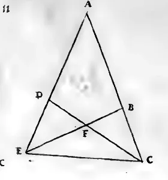
Proposition VII & Lemma IV: Pyramid Ratios and Compound Proportions
Proposition VII · Theorem I (pp. 10–11, Tab. 1, Fig. 12): In Element I (triangle :g:`AEC` with intersecting lines :g:`EB`, :g:`CD` meeting at :g:`F`), the ratio of segment :g:`EF` to :g:`FB` equals the ratio of the triangular pyramid (or solid) having base $\triangle AEC$ and height $CB$ to the solid having base $\triangle EFD$ and height $AB$ — equivalently, expressing the segment ratio via compounded triangle and rectangle ratios.
Proposition VIII: Area Proportionality in Element I
Proposition VIII · Theorem II (pp. 12–13, Tab. 1, Fig. 12)
Proposition IX: Fifteen Combinatorial Cases of Element II
Proposition IX · Problem VII (pp. 13–15, Tab. 1, Fig. 5)
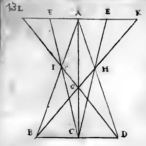
Proposition X & Lemma V: Third Perimeter Ratio (Caravaggio Proof)
Proposition X · Problem VIII (pp. 15–17, Tab. 1, Fig. 5): In Element II, given the ratio of :g:`DA` to :g:`AB` and the ratio of :g:`DE` to :g:`BC`, to determine the third base division :g:`CK` to :g:`KE`.
Proposition XI: Side Ratio via Triangles and Rectangles
Proposition XI · Theorem III (pp. 17–18, Tab. 1, Fig. 5)
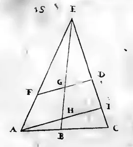
Proposition XII: Ten Combinatorial Cases of Element III
Proposition XII · Problem IX (pp. 18–21, Tab. 2, Fig. 15 & Tab. 1, Fig. 6)
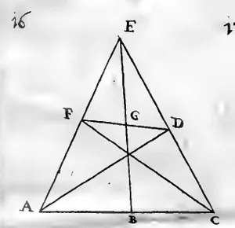
Proposition XIII: First Pyramid Theorem of Element III
Proposition XIII · Theorem IV (p. 21, Tab. 2, Fig. 16)
Proposition XIV: Dual Pyramid Theorem of Element III
Proposition XIV · Theorem V (p. 22, Tab. 2, Fig. 16)
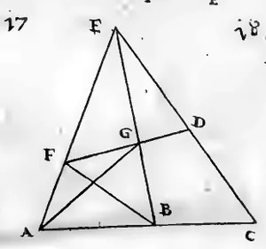
Proposition XV: Secant Segment Ratio in Element III
Proposition XV · Theorem VI (p. 22, Tab. 2, Fig. 17)
Proposition XVI: Base Ratio in Element III
Proposition XVI · Theorem VII (p. 23, Tab. 2, Fig. 17)
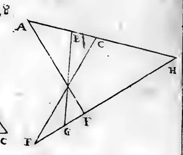
Proposition XVII: Ten Cases of Element IV & Folding Equivalence
Proposition XVII · Problem X (pp. 23–25, Tab. 2, Figs. 18–19 & Tab. 1, Fig. 7)
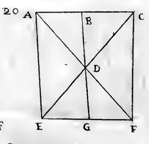
Proposition XVIII: First Pyramid Ratio of Element IV
Proposition XVIII · Theorem VIII (p. 26, Tab. 2, Fig. 20)
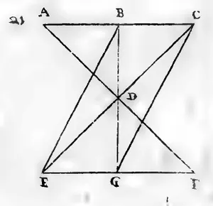
Proposition XIX: Second Pyramid Ratio of Element IV
Proposition XIX · Theorem IX (p. 26, Tab. 2, Fig. 21)
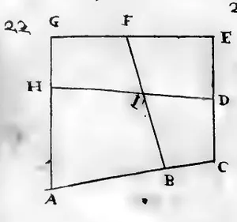
Proposition XX: Twenty Combinatorial Cases of Element V
Proposition XX · Problem XI (pp. 27–29, Tab. 2, Figs. 22–23)
Proposition XXI: Ratio Along an Interior Cevian Cut by a Chord
Proposition XXI · Theorem X (p. 30, Tab. 2, Fig. 24)
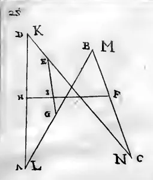
Proposition XXII: Concurrency and Coplanarity in Skew Quadrilaterals
Proposition XXII · Theorem XI (pp. 30–31, Tab. 3, Figs. 25–27)
Proposition XXIII: Seven Concurrent Lines in a Tetrahedron
Proposition XXIII · Theorem XII — The Seven-Line Spatial Theorem (pp. 31–32, Tab. 3, Fig. 28)
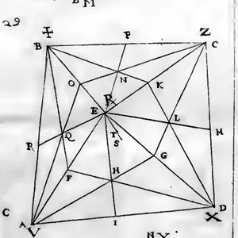
Proposition XXIV: Five Concurrent Lines in a Quadrangular Pyramid
Proposition XXIV · Theorem XIII (pp. 32–33, Tab. 3, Fig. 29)
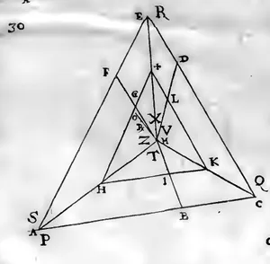
Proposition XXV: Concurrent Lines in a Pyramidal Frustum
Proposition XXV · Theorem XIV (pp. 33–34, Tab. 3, Fig. 30)
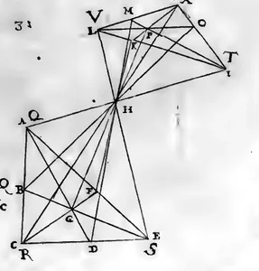
Proposition XXVI: Concurrent Lines in a Double Pyramid
Proposition XXVI · Theorem XV (p. 34, Tab. 3, Fig. 31)